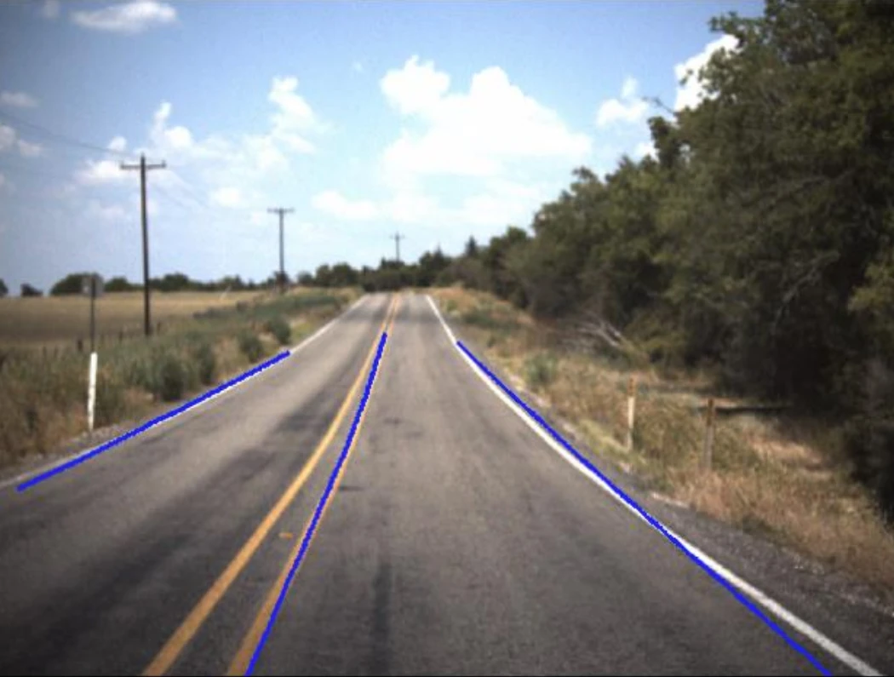
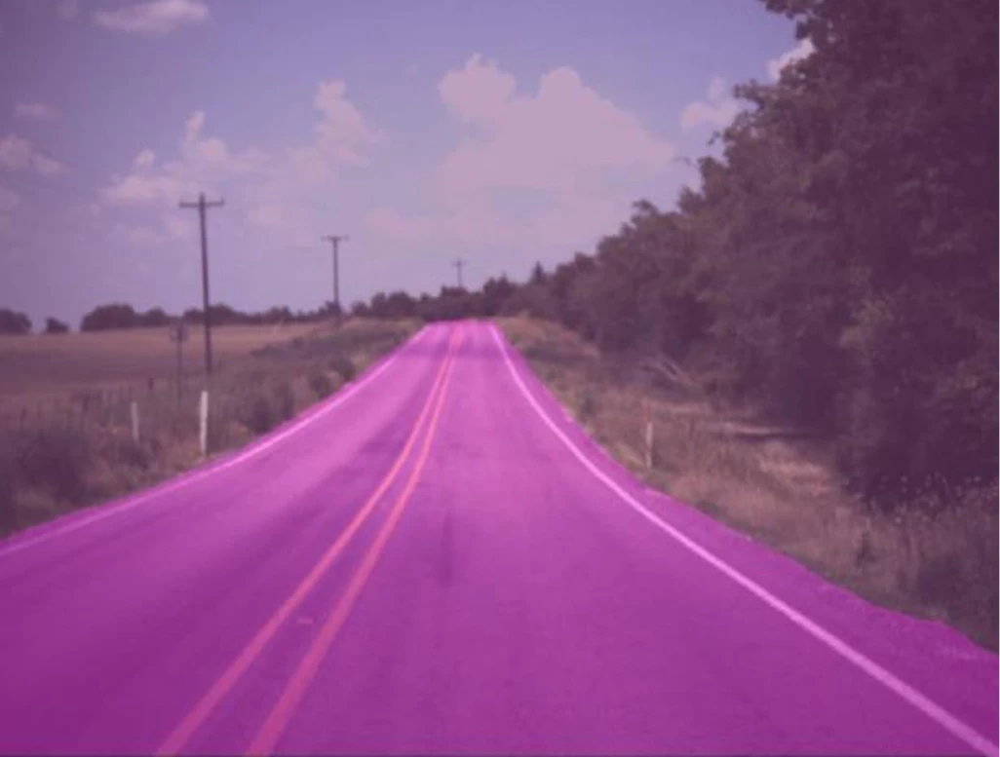

Autonomous Vehicles for All · Perception & planning
Automated Perception and Planning for Rural Roads
ROS 2 perception and trajectory planning for marked and unmarked rural roads, with a complementary map-based driver-assistance prototype.

Overview
Rural-road driving requires useful road boundaries even when lane markings are weak or absent. This work combines camera and LiDAR perception with road-relative trajectory planning, alongside a separate OpenStreetMap prototype that provides route context and driver alerts from recorded vehicle positions.
Technical contributions
- Road and lane perception. Integrated CLRerNet lane detection, SAM2 image segmentation and SphereFormer LiDAR semantic segmentation. Projected LiDAR measurements into the camera frame to recover spatial road boundaries; extracted left/right road edges from segmented point clouds for downstream processing.
- Multisensor object processing. Integrated YOLOv9 detections with synchronized LiDAR and radar observations to associate image objects with spatial detections. ROS 2 messages carry object and boundary outputs, with visualization supporting inspection of the perception pipeline.
- Local trajectory planning. Developed Frenet-frame candidate generation with lateral quintic and longitudinal quartic polynomials. Weighted costs balance smoothness, duration, lateral offset and target-speed error; a reference-generation node provides pose, speed and curvature targets to downstream control. Separate configurations support GPS-reference and perception-assisted planning.
- Map-based driver assistance. Built an OpenStreetMap route-analysis and driver-information workflow using recorded odometry. Route-segment matching drives intersection and curve warnings, lane and speed-limit displays, and rule-based speed advisories, with explicit labels for inferred map attributes. This prototype is separate from the trajectory-planner control loop.
- Visual-representation analysis. Applied Principal Component Analysis to OpenDriveVLA features from 6,019 nuScenes samples. The study measures feature redundancy to inform further investigation of compact visual representations.
Implementation and findings
The implementation provides ROS 2 modules for road perception, multisensor object processing and local trajectory references, plus a separate recorded-odometry driver-assistance dashboard. In the feature-analysis study, approximately ten principal components retained 80% of scene-token variance and 97% of map-token variance.
A closer look




Read more
Vehicle and baseline perception images courtesy of the AVA team’s technical overview. Implementation descriptions are grounded in the supplied perception vehicle-deployment, AVA planner and OSM driver-assistance source snapshots; the images show the earlier team baseline.